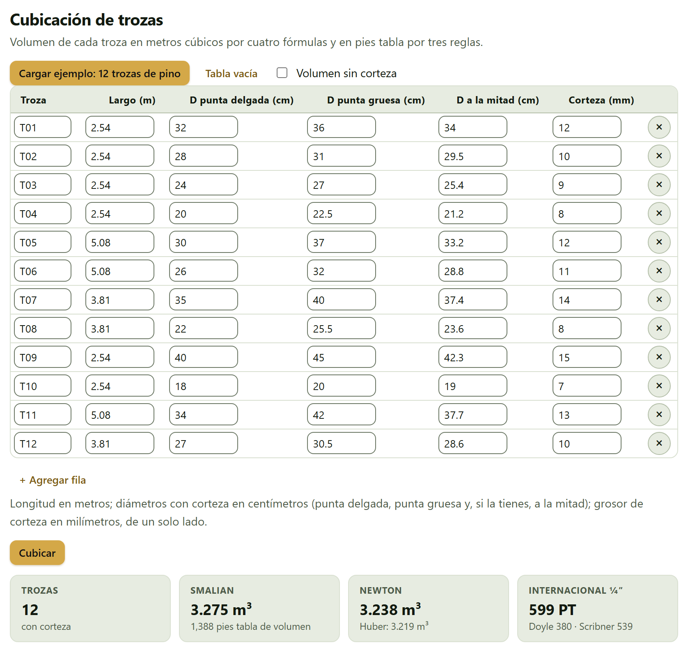
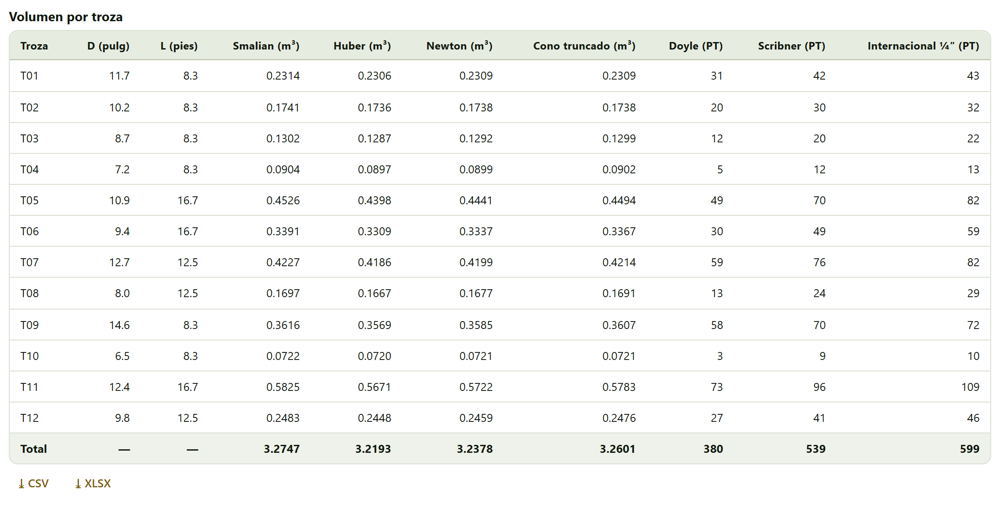
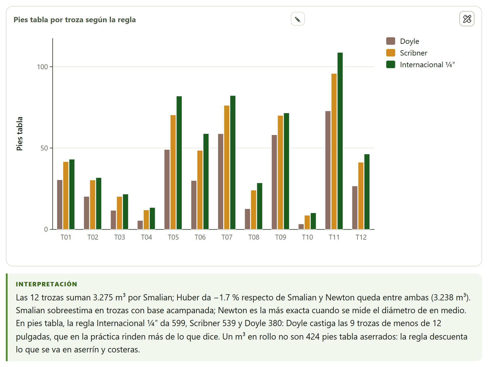
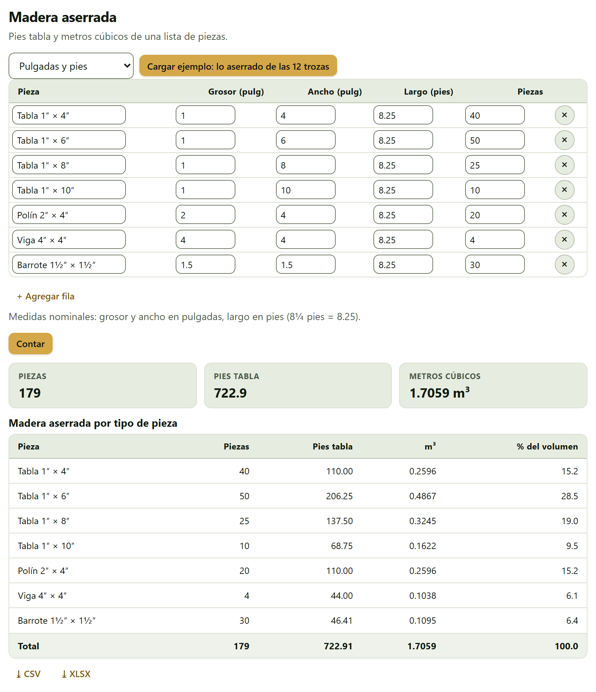
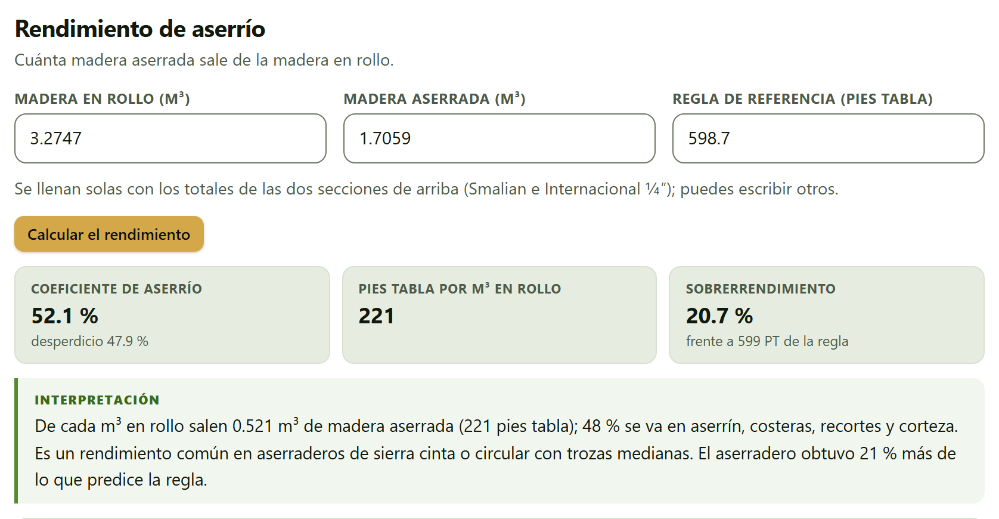
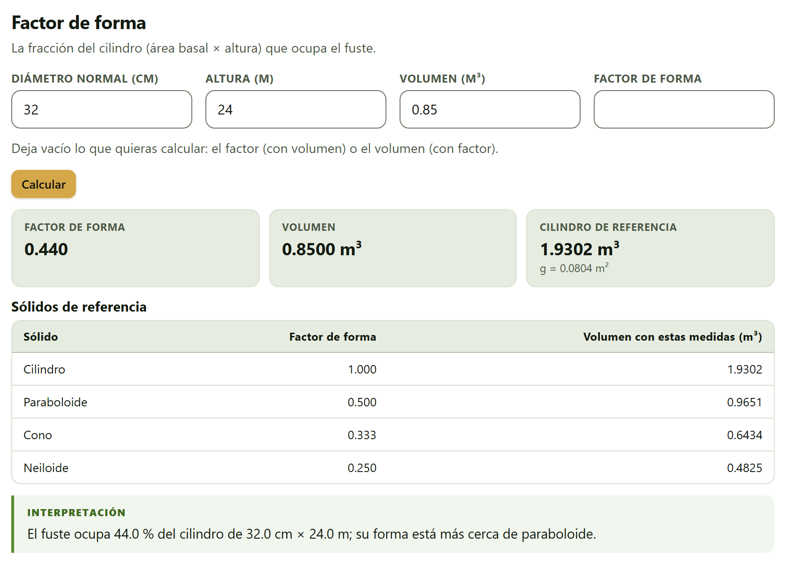
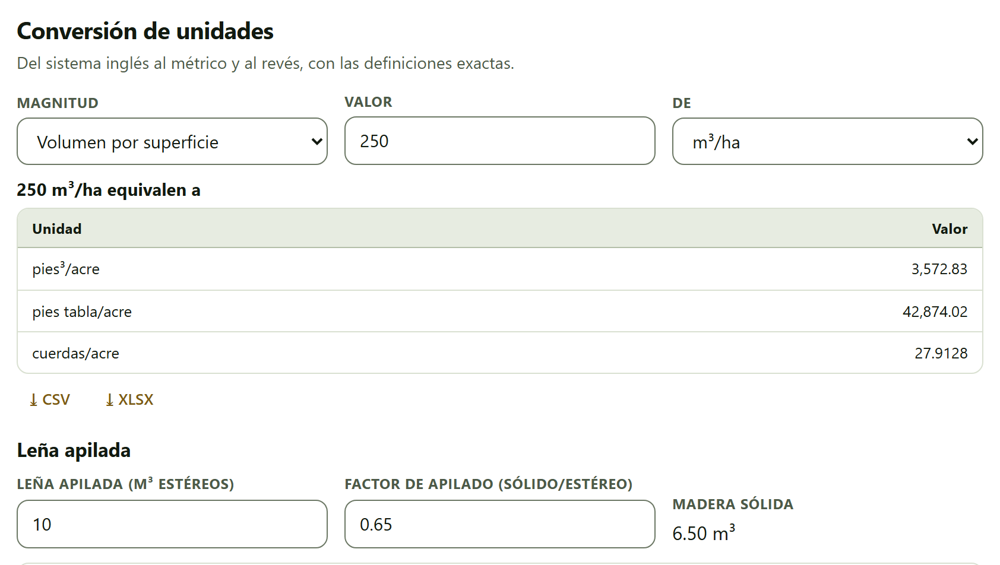
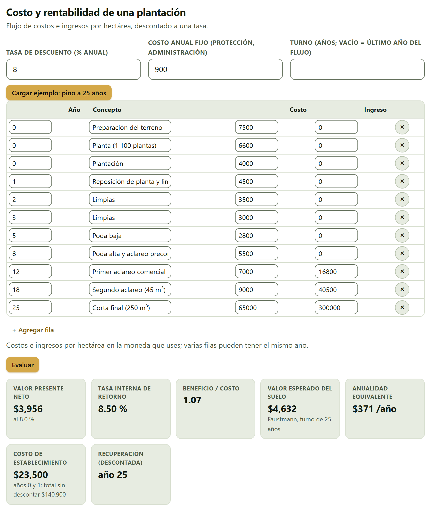
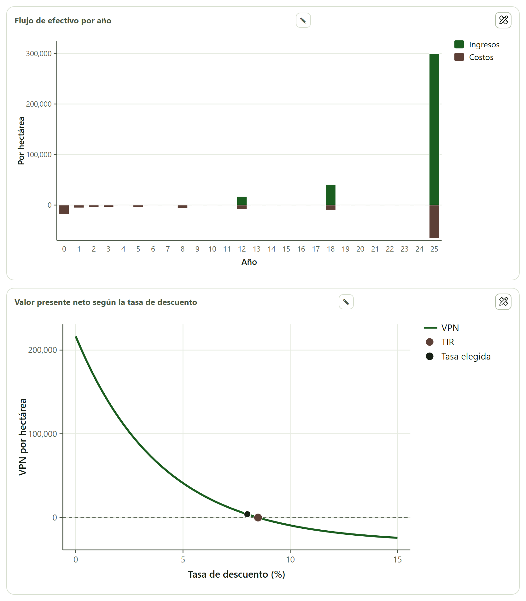

Las cuentas de todos los días en el monte y en el aserradero: cuánta madera trae una carga de trozas en metros cúbicos y en pies tabla, cuánto se obtuvo de tablas y polines, qué parte de la troza se fue en aserrín, qué factor de forma tiene un fuste, cómo se pasa un dato del sistema inglés al métrico y si una plantación paga lo que cuesta. Cada sección se usa sola, con sus números o con su ejemplo; la del rendimiento toma los suyos de las dos primeras.
El bloque no usa la tarjeta de datos de los demás (sección I.6): sus datos son pocos y se escriben en tablas editables, con una fila por troza, por tipo de pieza o por movimiento de dinero. Cada fila tiene su botón × para quitarla y, debajo de la tabla, + Agregar fila. Las celdas se llenan una por una: estas tablas no leen archivos ni bloques pegados. Los resultados aparecen al oprimir el botón de cada sección (Cubicar, Contar, Calcular el rendimiento, Calcular, Evaluar); la conversión de unidades responde sola mientras escribes.
El ejemplo de la plantación de pino abre las cuatro secciones que lo tienen ya calculadas: desde Inicio›Datos de ejemplo, el botón Abrir en Utilidades de la tarjeta del pino carga las 12 trozas, lo aserrado de ellas y el flujo de la plantación a 25 años, y calcula el rendimiento. Todas las cifras de este capítulo salen de ese ejemplo, que es simulado.
Una troza se mide en el patio con una cinta y una forcípula: su largo y los diámetros de sus puntas. Con eso, la sección da su volumen en metros cúbicos por cuatro fórmulas y la madera aserrada que se espera de ella, en pies tabla, por las tres reglas de troza más usadas en el comercio de madera.
Arriba están Cargar ejemplo: 12 trozas de pino, Tabla vacía (deja una sola fila en blanco) y la casilla Volumen sin corteza. La tabla pide, por troza:
| Columna | Qué va |
|---|---|
| Troza | Un nombre o una clave (T01, T02…). |
| Largo (m) | El largo de la troza, en metros. Obligatorio. |
| D punta delgada (cm) · D punta gruesa (cm) | Los diámetros de las dos puntas, con corteza, en centímetros. Obligatorios. |
| D a la mitad (cm) | El diámetro a la mitad del largo, si lo mediste; sin él no hay Huber ni Newton. |
| Corteza (mm) | El grosor de la corteza, de un solo lado, en milímetros. |
La nota bajo la tabla lo resume: «Longitud en metros; diámetros con corteza en centímetros (punta delgada, punta gruesa y, si la tienes, a la mitad); grosor de corteza en milímetros, de un solo lado.» Una fila sin largo o sin alguno de los dos diámetros de las puntas no se cubica.

Las cuatro fórmulas de volumen tratan la troza como un sólido. Con el área de cada sección g = πd²/40 000 (m², d en cm) y el largo L en m: Smalian promedia las áreas de las puntas, V = L(g₁ + g₂)/2; Huber usa la de en medio, V = L·gm; Newton combina las tres, V = L(g₁ + 4gm + g₂)/6, y es exacta para el paraboloide, el cono y el neiloide; el cono truncado usa sólo las puntas, V = πL(d₁² + d₁d₂ + d₂²)/120 000. Sin corteza, a cada diámetro se le resta dos veces el grosor de corteza.
Las reglas de troza no miden volumen: predicen cuánta madera aserrada rendirá la troza, descontando de antemano el aserrín y las costeras. Usan el diámetro de la punta delgada sin corteza, en pulgadas (D), y el largo en pies (L). Doyle: (D − 4)²L/16. Scribner, por la fórmula de Bruce: (0.79D² − 2D − 4)L/16. Internacional ¼″: secciones de 4 pies, cada una con media pulgada más de diámetro que la anterior, 0.22D² − 0.71D pies tabla por sección y el factor 0.905 de la sierra de un cuarto de pulgada; la fracción final cuenta en proporción a su largo (Husch et al. 2003; Avery y Burkhart 2002; Bruce 1925; Clark 1906).
La tabla Volumen por troza trae, para cada troza y en total, el diámetro sin corteza en pulgadas (D (pulg)) y el largo en pies (L (pies)) con que trabajan las reglas, los cuatro volúmenes y los pies tabla de las tres reglas. En la pantalla de 1 400 píxeles la tabla es más ancha que la tarjeta y la última columna se alcanza desplazándola hacia un lado; la figura 9.2 la muestra completa.

Con Volumen sin corteza, los volúmenes en metros cúbicos se recalculan con los diámetros menos la corteza: las 12 trozas bajan a 2.828 m³ por Smalian, 2.793 por Newton y 2.775 por Huber. Los pies tabla no cambian (599, 380 y 539), porque las reglas trabajan siempre con el diámetro sin corteza. Si en alguna troza la punta delgada resulta más gruesa que la gruesa, la app avisa: «En … trozas la punta delgada es más gruesa que la gruesa; revisa el orden de las columnas.»
Un pie tabla es un volumen (144 pulgadas cúbicas) y 1 m³ equivale a 423.776 pies tabla: el mosaico de Smalian dice «1,388 pies tabla de volumen» para eso. Pero los pies tabla de una regla son madera aserrada, ya sin aserrín ni costeras: las mismas trozas dan 599 por la Internacional ¼″. No mezcles las dos cifras al comprar o vender madera; di siempre qué regla usaste.
La figura Pies tabla por troza según la regla pone las tres reglas lado a lado, troza por troza, y la interpretación resume lo que significan las diferencias.

La otra punta del aserradero: lo que salió de las trozas, contado por tipo de pieza. La sección suma los pies tabla y los metros cúbicos de una lista de piezas y dice qué parte del volumen es cada tipo.
El menú Unidades elige Pulgadas y pies (grosor y ancho en pulgadas, largo en pies, con las medidas nominales con que se comercia la madera) o Centímetros y metros (grosor y ancho en centímetros, largo en metros). La tabla pide Pieza (el nombre), Grosor, Ancho, Largo y Piezas, el número de piezas iguales (1 si se deja vacío). Cargar ejemplo: lo aserrado de las 12 trozas pone siete tipos de piezas de 8¼ pies y Contar hace la cuenta.
Un pie tabla es una pieza de 1 pulgada × 12 pulgadas × 1 pie, 2.359 737 216 dm³ (NIST 2008). Así, una tabla de 1″ × 6″ de 8¼ pies son 4.125 pies tabla, y las 50 del ejemplo, 206.25. Al cambiar de unidades, la tabla cambia los rótulos de sus columnas, pero no convierte los números que ya escribiste.

Cuánta madera aserrada sale de la madera en rollo. Es la cifra que mide un aserradero, y la que dice si una regla de troza le queda corta.
Tres campos: Madera en rollo (m³), Madera aserrada (m³) y Regla de referencia (pies tabla). «Se llenan solas con los totales de las dos secciones de arriba (Smalian e Internacional ¼″); puedes escribir otros.» La regla es opcional; sin ella no hay sobrerrendimiento.

La interpretación clasifica el coeficiente: por debajo de 45 % lo llama bajo («trozas delgadas o torcidas, sierras de corte grueso o un patrón de corte que no aprovecha la troza»), por encima de 65 % alto («propio de trozas gruesas y rectas o de sierras delgadas»), y entre los dos, común en aserraderos de sierra cinta o circular con trozas medianas. Si sale más madera aserrada que en rollo, la app lo marca en rojo: «Sale más madera aserrada que en rollo: revisa las unidades o los datos.»
La fracción del cilindro (área basal × altura) que ocupa el fuste. Con él se estima el volumen de un árbol en pie a partir de su diámetro y su altura, cuando no hay una ecuación de volumen para la especie.
Cuatro campos, con valores de muestra: Diámetro normal (cm) (32), Altura (m) (24), Volumen (m³) (0.85) y Factor de forma (vacío). «Deja vacío lo que quieras calcular: el factor (con volumen) o el volumen (con factor).» Calcular da el factor, el volumen y el cilindro de referencia, y la tabla Sólidos de referencia dice qué volumen tendría el árbol con la forma de cada sólido.

Es el factor de forma artificial, referido a la altura del pecho (Prodan et al. 1997). Los sólidos de referencia, medidos en su base, tienen f = 1 (cilindro), 1/2 (paraboloide), 1/3 (cono) y 1/4 (neiloide). En coníferas suele estar entre 0.40 y 0.55. Con el factor 0.45 en lugar del volumen, el mismo árbol tendría 0.8686 m³. La interpretación avisa si el factor pasa de 1 («indica un error en el volumen o en las medidas») o baja de 0.3 («raro en un fuste comercial: revisa el volumen»). Si tienes árboles cubicados, las ecuaciones de volumen del Bloque 2 (capítulo 2) sustituyen con ventaja a un factor de forma fijo.
Del sistema inglés al métrico y al revés, con las definiciones exactas: lo que hace falta para leer un inventario, una tabla de rendimiento o una regla de troza de otro país.
Magnitud elige qué se convierte; Valor y De, el número y su unidad. La tabla … equivalen a da el valor en cada una de las demás unidades de esa magnitud, y se recalcula al escribir:
| Magnitud | Unidades |
|---|---|
| Longitud | metros, centímetros, milímetros, kilómetros, pulgadas, pies, yardas, cadenas (66 pies), millas |
| Superficie | m², hectáreas, km², acres, pies² |
| Volumen | m³, dm³ (litros), pies³, pies tabla, cuerdas (128 pies³ apilados) |
| Masa | kilogramos, gramos, toneladas (Mg), libras, toneladas cortas, toneladas largas |
| Área basal por superficie | m²/ha, pies²/acre |
| Volumen por superficie | m³/ha, pies³/acre, pies tabla/acre, cuerdas/acre |
| Biomasa por superficie | Mg/ha (t/ha), kg/m², toneladas cortas/acre, libras/acre |
| Carbono y CO₂ | Mg C/ha, Mg CO₂e/ha |
| Densidad | kg/m³, g/cm³, libras/pie³ |
| Árboles por superficie | árboles/ha, árboles/acre, árboles/m² |

Las definiciones son las exactas: 1 pulgada = 2.54 cm, 1 pie = 0.3048 m, 1 acre = 4 046.856 422 4 m², 1 libra = 0.453 592 37 kg, 1 pie tabla = 144 pulgadas cúbicas y 1 cuerda = 128 pies³ de madera apilada (NIST 2008). Las magnitudes por superficie combinan el factor de la unidad y el de la superficie: 120 pies²/acre de área basal son 27.5482 m²/ha. El carbono pasa a CO₂ equivalente multiplicándolo por 44/12: 46 Mg C/ha son 168.67 Mg CO₂e/ha.
Debajo de la tabla, Leña apilada (m³ estéreos) y Factor de apilado (sólido/estéreo) dan la Madera sólida. Un metro cúbico estéreo es el que ocupa la leña apilada, con sus huecos; el factor de apilado, la parte que es madera. Depende del diámetro y de lo recto de las piezas: 0.6 a 0.7 es lo común en leña, y la app abre con 0.65.
Una plantación forestal gasta casi todo al principio y cobra casi todo al final, veinte o treinta años después. Para saber si paga hay que llevar cada peso al presente con una tasa de descuento. La sección hace esa cuenta por hectárea con las medidas de la economía forestal.
Tres campos: Tasa de descuento (% anual) (8), Costo anual fijo (protección, administración) (900), que se carga cada año del 1 al turno, y Turno (años; vacío = último año del flujo). La tabla lleva un renglón por movimiento: Año, Concepto, Costo e Ingreso, por hectárea y en la moneda que uses; «varias filas pueden tener el mismo año». Cargar ejemplo: pino a 25 años trae once movimientos, de la preparación del terreno a la corta final, y Evaluar hace la cuenta.

Con la tasa r y el flujo neto Nt = ingresos − costos del año t: el valor presente neto es VPN = Σ Nt/(1 + r)t; la relación beneficio/costo, el valor presente de los ingresos entre el de los costos; la tasa interna de retorno (TIR), la tasa que anula el VPN, buscada entre −90 % y 200 %; el valor esperado del suelo de Faustmann (1849), VES = VPN·(1 + r)T/((1 + r)T − 1), lo que vale la tierra si se repite el mismo turno T para siempre; la anualidad equivalente, VPN·r/(1 − (1 + r)−T), el VPN repartido en pagos anuales iguales; y la recuperación, el primer año en que el flujo descontado acumulado deja de ser negativo (Klemperer 1996; Bettinger et al. 2017). Todo es en valores reales: usa una tasa sin inflación y precios constantes.
Debajo de los mosaicos vienen dos figuras. Flujo de efectivo por año pone los ingresos hacia arriba y los costos hacia abajo; Valor presente neto según la tasa de descuento traza el VPN entre 0 y 15 %, con la tasa elegida y la TIR, que es donde la curva cruza el cero.

La tabla Flujo de efectivo descontado da, por año, los costos (con el costo anual incluido), los ingresos, el neto, el neto descontado y el acumulado descontado, que en el pino pasa de −$30,227 en el año 24 a $3,956 en el 25. Su nota dice que los años con sólo el costo anual no se muestran, pero sí aparecen en la tabla (del año 4 al 24, los que no tienen otro movimiento salen con 900 de costo).
Con la tasa al 10 %, el pino deja de pagar: el VPN cae a −$9,333 por hectárea, la relación beneficio/costo a 0.81, el valor esperado del suelo a −$10,282 y la recuperación dice «no se recupera»; la TIR sigue en 8.50 %, porque no depende de la tasa elegida. Con la tasa al 8 % y el turno en 18 años, la corta final queda fuera («1 movimientos caen después del turno y no se cuentan.») y el VPN se hunde a −$29,186: sin la corta final, los aclareos no pagan el establecimiento.
El VPN de un solo turno favorece a los turnos largos sólo porque ocupan la tierra más tiempo. Para elegir entre un turno de 20 y uno de 25 años, compara el valor esperado del suelo de Faustmann, que supone que el turno se repite para siempre. Y como casi todo el ingreso llega al final, el resultado es muy sensible a la tasa y al precio de la corta final: prueba varias tasas antes de decidir.
| Si mediste el diámetro a la mitad de la troza | entonces usa Newton (o Huber); sin él, cono truncado o Smalian, sabiendo que Smalian sobreestima en trozas de base acampanada. |
| Si vas a comprar o vender trozas en pies tabla | entonces pacta la regla: Doyle da mucho menos que la Internacional ¼″ en trozas de menos de 12 pulgadas. |
| Si el coeficiente de aserrío baja de 45 % | entonces revisa el diámetro y lo recto de las trozas, el corte de la sierra y el patrón de corte. |
| Si el sobrerrendimiento es grande y positivo | entonces la regla subestima lo que tu aserradero obtiene; para tu madera, el rendimiento medido vale más que la regla. |
| Si el factor de forma pasa de 1 o baja de 0.3 | entonces hay un error en el volumen o en las medidas. |
| Si el VPN es positivo y la TIR mayor que la tasa exigida | entonces la plantación paga con esa tasa; para comparar turnos, usa el valor esperado del suelo. |
Guías para interpretar, no leyes: el precio de tu madera, tu aserradero y tu tasa de descuento mandan.